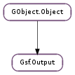

| Subclasses: | Gsf.Outfile, Gsf.OutputBzip, Gsf.OutputCsv, Gsf.OutputGZip, Gsf.OutputGio, Gsf.OutputIOChannel, Gsf.OutputIconv, Gsf.OutputMemory, Gsf.OutputStdio |
|---|
| static | error_id() |
| static | unwrap(wrapper, wrapee) |
| static | wrap(wrapper, wrapee) |
| close() | |
| container() | |
| error() | |
| get_modtime() | |
| is_closed() | |
| name() | |
| puts(line) | |
| seek(offset, whence) | |
| set_container(container) | |
| set_modtime(modtime) | |
| set_name(name) | |
| set_name_from_filename(filename) | |
| size() | |
| tell() | |
| write(data) |
| Name | Type | Flags | Description |
|---|---|---|---|
| container | Gsf.Outfile | r/w | The parent Gsf.Outfile |
| is-closed | bool | r | Whether the output is closed |
| modtime | GLib.DateTime | r/w/c | An optional GLib.DateTime representing the time the output was last changed |
| name | str | r/w | The output’s name |
| position | int | r | The output’s current position |
| size | int | r | The output’s size |
None
| Name | Type | Access |
|---|---|---|
| cur_offset | int | r |
| cur_size | int | r |
| g_object | GObject.Object | r |
| printf_buf | str | r |
| printf_buf_size | int | r |
| wrapped_by | GObject.Object | r |
Bases: GObject.Object
Class representing an output stream, counterpart to Gsf.Input.
| Parameters: |
|
|---|---|
| Returns: | True if the unwrapping succeeded. |
| Return type: |
| Parameters: |
|
|---|---|
| Returns: | True if the wrapping succeeded. |
| Return type: |
| Returns: | output ‘s container, potentially None. |
|---|---|
| Return type: | Gsf.Outfile |
The container, optionally None, in which this output lives.
| Returns: | the last error logged on the output, or None. |
|---|---|
| Return type: | GLib.GError |
| Returns: | A GLib.DateTime representing when the output was last modified, or None if not known. |
|---|---|
| Return type: | GLib.DateTime |
| Parameters: | line (str) – Nul terminated string to write |
|---|---|
| Returns: | True if successful, False if not |
| Return type: | bool |
Like fputs, this assumes that the line already ends with a newline
| Parameters: |
|
|---|---|
| Returns: | False on error. |
| Return type: |
Reposition in output stream output. whence specifies what the offset is relative to: the beginning of the stream (GLib.SeekType.SET ), current position in the stream (GLib.SeekType.CUR ) or the end of the stream (GLib.SeekType.END ). This function is similar to fseek 3.
| Parameters: | container (Gsf.Outfile) – Gsf.Outfile |
|---|---|
| Returns: | True if the assignment was ok. |
| Return type: | bool |
This is a utility routine that should only be used by derived outputs.
| Parameters: | modtime (GLib.DateTime or None) – the new modification time. |
|---|---|
| Returns: | True if the assignment was ok. |
| Return type: | bool |
| Parameters: | name (str) – the new name |
|---|---|
| Returns: | True if the assignment was ok. |
| Return type: | bool |
This is a utility routine that should only be used by derived outputs.
| Parameters: | filename (str) – the (fs-sys encoded) filename |
|---|---|
| Returns: | True if the assignment was ok. |
| Return type: | bool |
This is a utility routine that should only be used by derived outputs.
| Returns: | the size of the output, or -1 if it does not have a size. |
|---|---|
| Return type: | int |
The current file size.